Evolución tecnológica en el mundo y sus efectos en la educación
Contexto
Este proyecto, fue planteado por el interés compartido por la tecnología y nuestra realidad actual como estudiantes universitarios. En los tiempos actuales, con el avance de la tecnología, se ha desarrollado el uso de inteligencia artificial, la cual su uso ha sido dirigido a distintos campos incluida la educación.
En base a esto definimos nuestra pregunta central de investigación:
¿La masificacion de los avances tecnologicos en el siglo XXI ha mejorado o empeorado el rendimiento en estudiantes de Chile?
Metodología
Para poder responder esta pregunta que nos hemos planteado, recolectamos datos de distintas fuentes como:
- Exportación de dispositivos tecnologicos en Chile del Banco de Chile
- Tráfico de dispositivos en Chile
- Rendimiento de estudiantes como el NEM del Mineduc
- Encuestas a estudiantes universitarios acerca de la IA
- Uso y habitos relacionado con libros
Análisis y resultados de datos
Nuestro primer analisis es sobre el trafico de dispositivos en Chile:
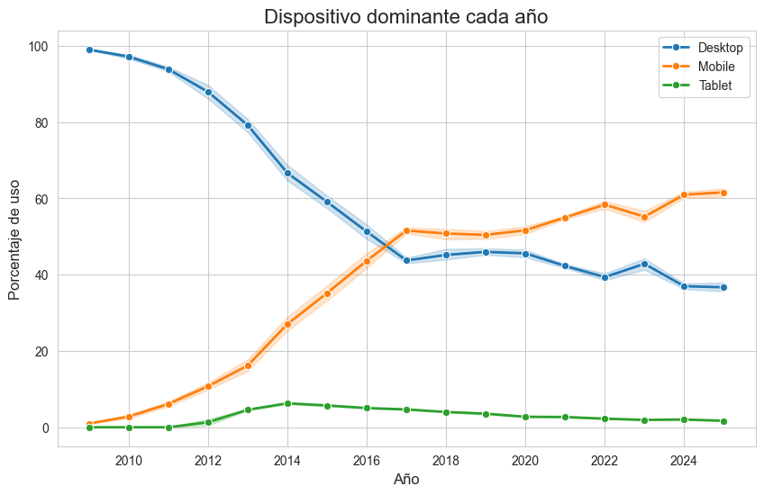
Según podemos ver, a principios del 2010 los portatiles o computadores eran más comunes, pero con el paso del tiempo se puede ver un aumento de los dispositivos mobiles el cual supera al resto. Esto es evidenciable en el dia a dia de como han ido cambiando las tendencias. Por ultimo tenemos las tables que tienen un uso infimo pero son parte del total.
Ahora queremos ver cuanto ha ido aumentando la exportación de dispositivos en Chile en los ultimos años
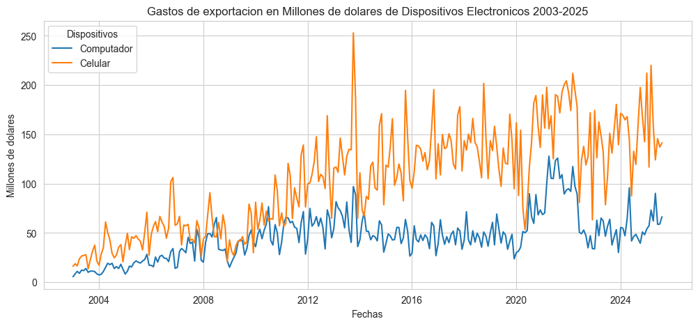
Relacionandolo con el gráfico anterior, podemos ver que si bien ambos tienen una gran cantidad de exportaciones en millones de dolares, los dispositivos mobiles vuelven a superar a los portatiles o computadores
Respecto a la IA vamos a ver un par de gráficos relacionados con las encuestas de los universitarios de su percepción con la IA Primero con respecto a la frecuencia del uso de IA

En base a las respuestas de los estudiantes, se puede ver que hay un gran uso evidente de IA diario, seguido por uso mensual y ya en mucha menor medida mensual. Tambien notar que son casi inexistentes los estudiantes que respondieron no usar IA.
Luego, acerca del aprendizaje mediante IA
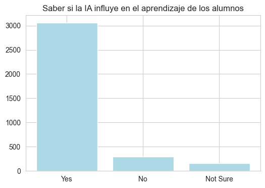
Podemos ver que la gran mayoria de los estudiantes opinan que el uso de IA si influye en el aprendizaje de los alumnos, esto puede ser debido a la facilidad del acceso de informacion que el estudiante necesita con rapidez inmediata.
Por ultimo tenemos 3 gráficas relacionado con como afecta la IA al pensamiento crítico y la creatividad
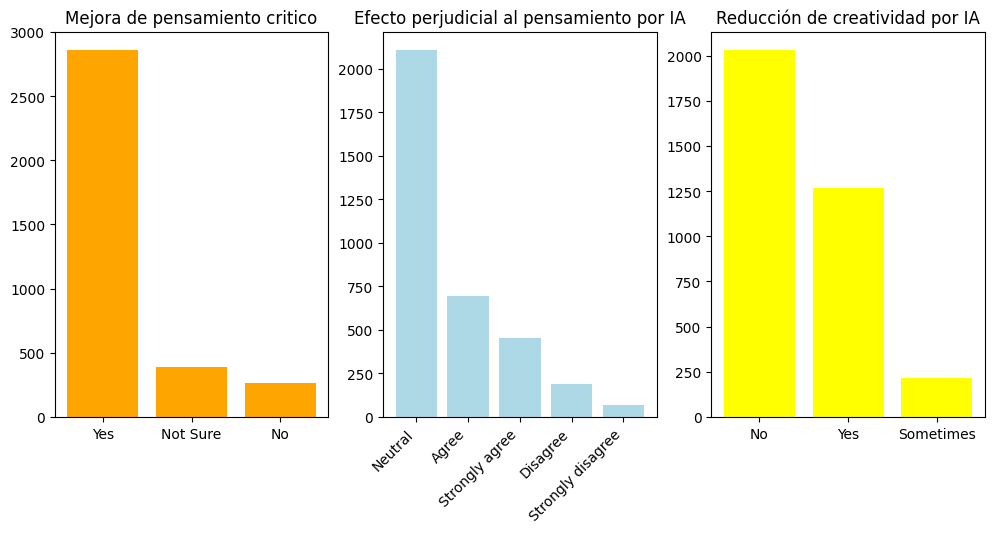
Podemos ver que una gran cantidad de estudiantes opina que el uso de IA mejora el pensamiento crítico, por otro lado, en las otras 2 gráficas acerca de efectos perjudiciales del uso de IA la gran mayoria de los estudiantes tienen una opinión neutra o no consideran que la IA afecta negativamente.
Ahora viendo un poco más localmente, tenemos un gráfico acerca del NEM de los estudiantes de enseñanza media de Chile
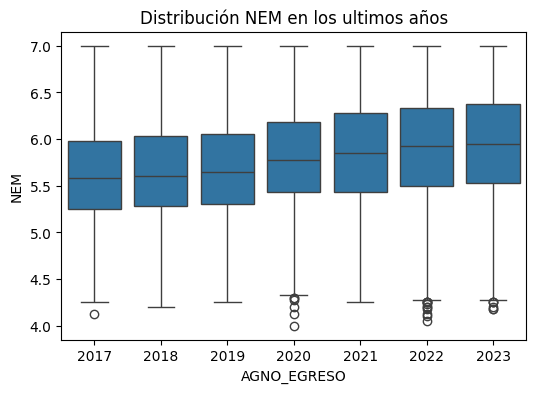
Se puede apreciar que con los datos que tenemos, la distrución promedio del NEM, ha ido lentamente subiendo con el paso de los años, siendo el unico año atipico el 2020, el cual por motivos obvios sabemos que fue el año donde ocurrio el COVID.
Respecto a los otros datos que tenemos, recolectamos datos de libros y sus tendencias. Primero, vamos a ver un gráfico de las ventas de libros dependiendo de su tipo
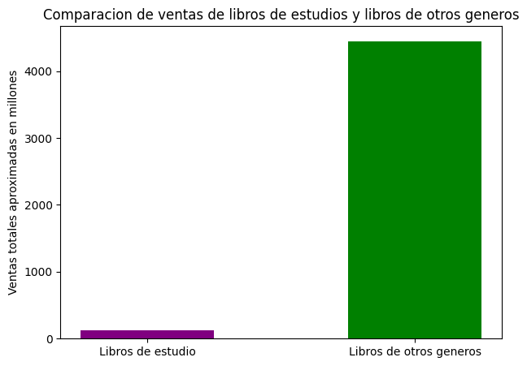
Se evidencia en este grafico que existe una diferencia abrumadora entre los libros de otros generos y los libros de estudio, esto puede llevar a suponer que los estudiante prefieren estudiar con otros metodos o recursos que no sean libros de estudio fisicos.
Este grafico, muestra la cantidad de libros impresos leidos en los ultimos 2 años
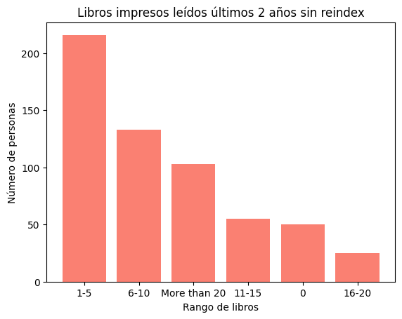
El grafico muestra como va decreciendo de a poco la cantidad de gente que lee libros impresos en una cierta cantidad pero si muestra una tendencia alta en una cantidad baja de libros.
Relacionando con el gráfico anterior, el siguiente gráfico muestra la cantidad de e-book leidos en los ultimos 2 años y la cantidad de personas.
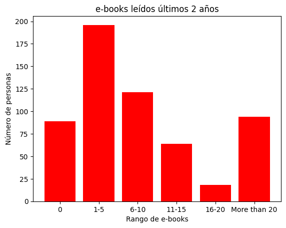
Se ve claramente que si bien, hay una cantidad considerable de gente que no lee ningún e-book, comparando con la gente que si lee e-book si existe una gran diferencia, siendo entre 1 a 5 e-book donde hay la mayor cantidad de gente para luego ir decreciendo poco a poco y luego volver a subir en más de 20, el cual se puede suponer que es gente aficionada a la lectura y tambien a el facil acceso que se puede tener a estos libros digitales.
Terminando de relacionar los ultimos 2 graficos podemos ver el formato preferido de libro pero en un ambito academico
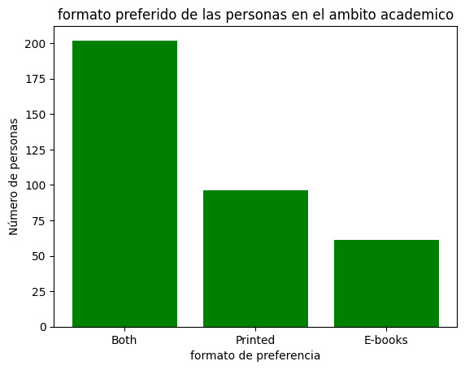
Se puede apreciar que la gran mayoria de los estudiantes se inclina por ambos formatos, seguido por los que solo prefieren el formato fisico y por ultimo los que solo prefieren en digital. Esto se relaciona con los 2 ultimos graficos vistos y tiene sentido.
Finalmente recopilando todo lo que tenemos, volviendo a la pregunta central, tenemos unos graficos con un modelo de predicción acerca del NEM
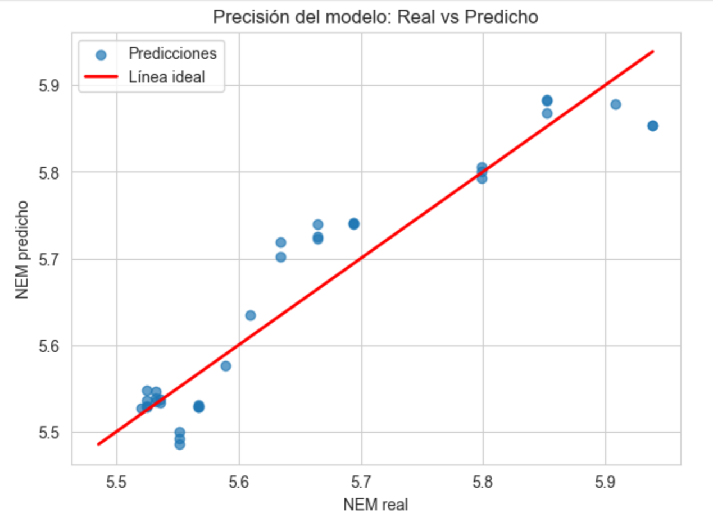
Podemos ver que nuestra linea ideal del modelo, si bien no tiene una cantidad inmensa de datos, si se logra ajustar relativamente a los valores predichos por el modelo, esto tambien tiene sentido ya que las metricas del modelo tienen un alto coeficiente de correlacion y un bajo error cuadratico medio.
Relacionando con lo anterior, ahora tenemos modelos relacionando el NEM con los distintos dispositivos.
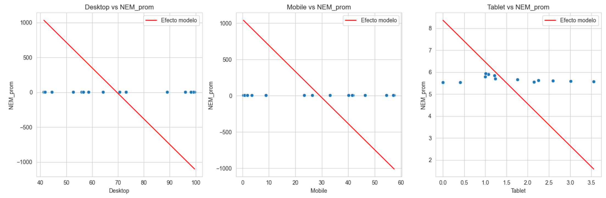
En base a estos modelos, se ve los datos reales y predichos se ven como una recta con una diferencia en los datos, esto se debe a que el valor del NEM en promedio por año no varia demasiado, por lo que al graficar los datos predichos en base a los datos reales, tendria valores similares y no se podria ver una diferencia apreciable para el ojo humano a pesar de que esta si existe si se usa el modelo para predecir de forma manual por lo que se tuvo que ajustar los datos para poder apreciar de mejor forma que a mayor cantidad de dispositivos peor es el aprendizaje.
Conclusiones y Resultados
Primero hay que destacar una pregunta importante, ¿que pudo o puede haber salido mal?. Principalmente, a lo largo del desarrollo del proyecto si bien pudimos obtener diversos datos relacionados con el objetivo de nuestra investigacion si encontramos la falta de algunos de estos que podrian ser más especificos y esto los hacia más dificil de encontrar. Un ejemplo es que a comparación del NEM o las exportaciones que son datos publicos de entidades como el gobierno o el banco, no pudimos encontrar algo como el aumento de IA en los ultimos años, ya que es algo muy abstracto y al ser algo reciente de los ultimos no hay estudios tan extensos como para poder encontrar datos acerca de esto.
Para finalizar, pudimos responder nuestras preguntas de investigacion y nuestra pregunta central, en la que si pudimos ver que la masificacion de tecnologia puede empeorar el rendimiento de estudiantes es Chile en base a nuestro modelo.
Gracias por leer :D